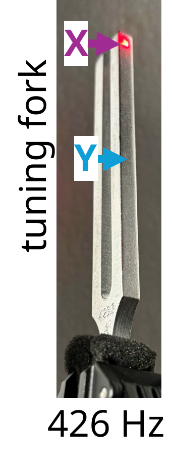
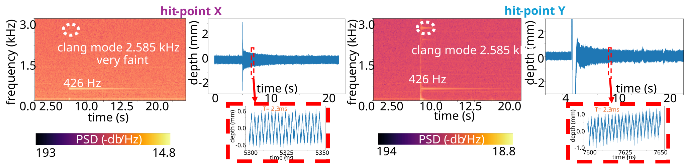
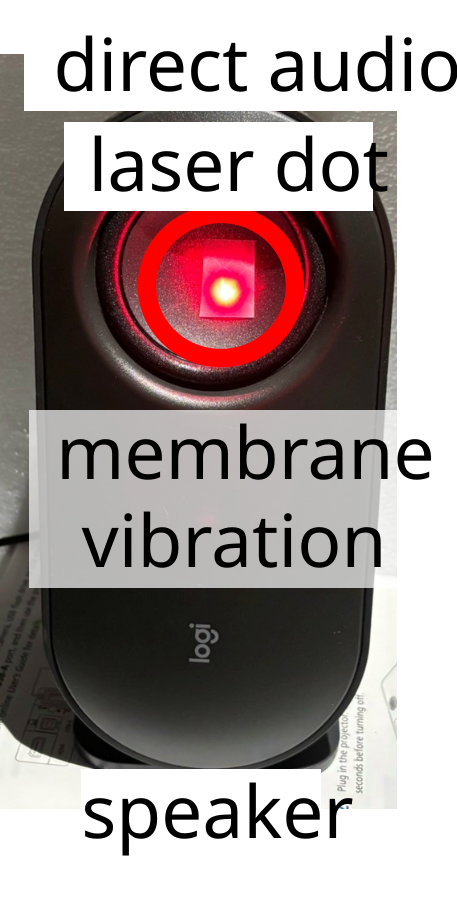
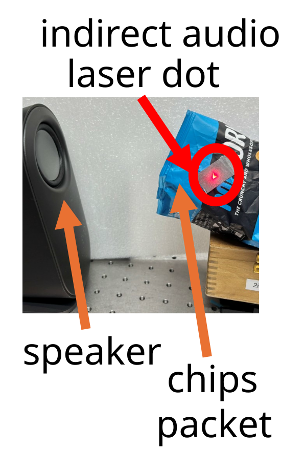
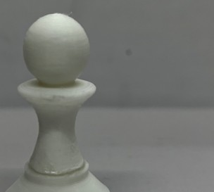
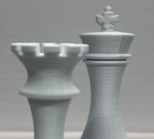
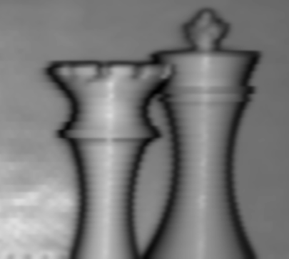
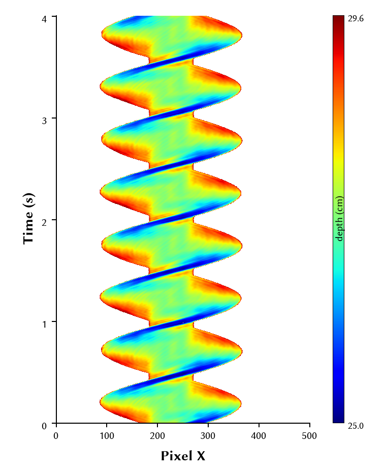

visual microphone fast depth rates enable vibration sensing.


Position X at the tip does not excite the clang mode; middle hit Y does. The damping behavior is visible.

microphone — guitar tones
ours — guitar tones
microphone — mary had a little lamb
ours — mary had a little lamb

microphone — guitar tones
ours — guitar tones
microphone — mary had a little lamb
ours — mary had a little lamb
static depth Scans static depth scans obtained from point sensors steered with mirrors.
pawn
static

static
magnitude of IQ measurement
interactive viewer
atan2(Q, I)
king & queen
static

static

magnitude of IQ measurement
interactive viewer
atan2(Q, I)
dynamic depth Scans dynamic depth scans obtained from point sensors steered with mirrors.
1D scan

2D scans
optical velocimetry fast depth rates enable velocity from depth derivatives.